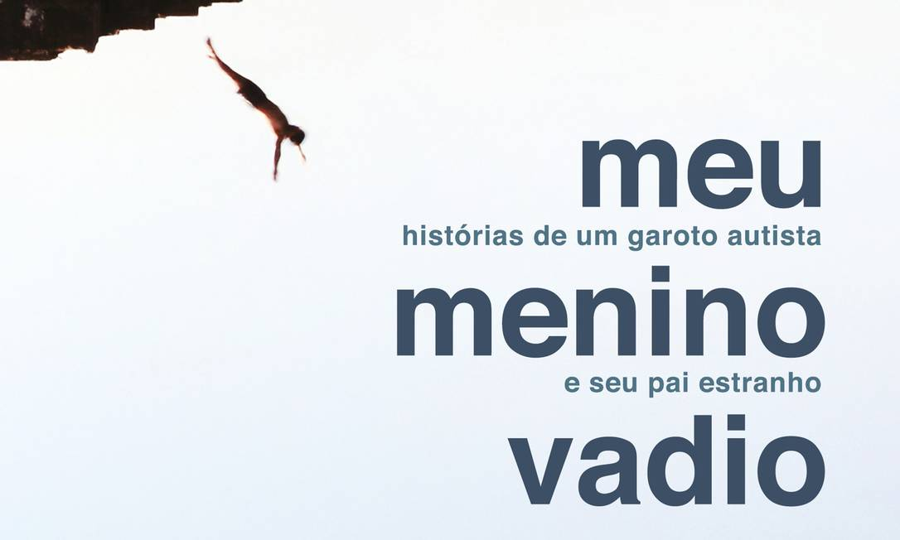
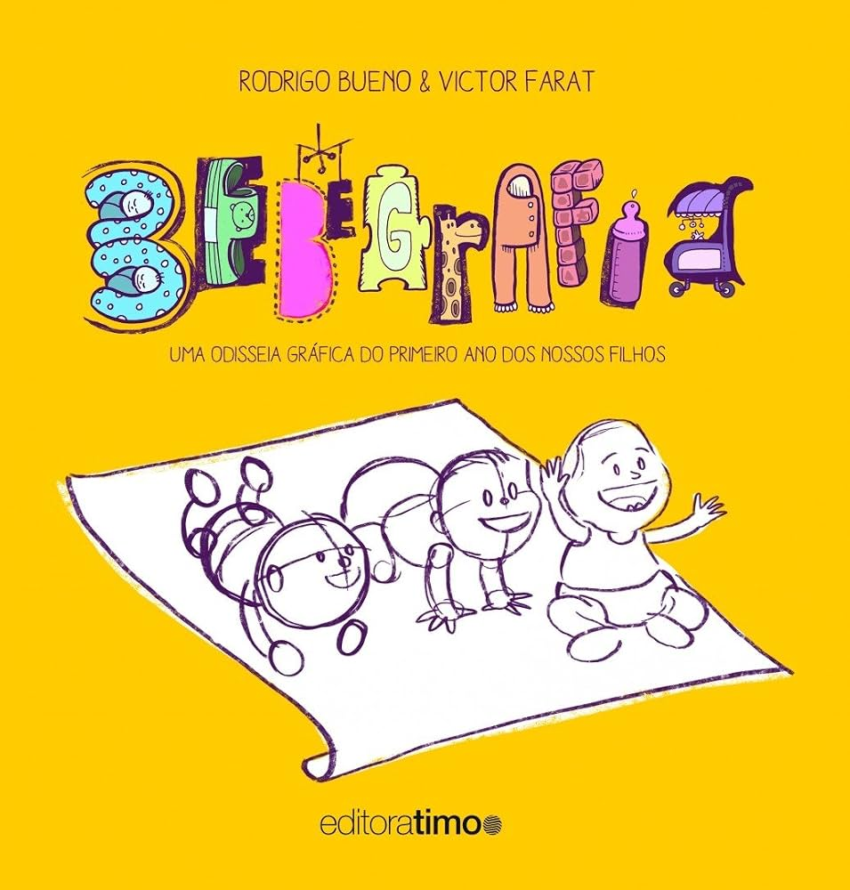
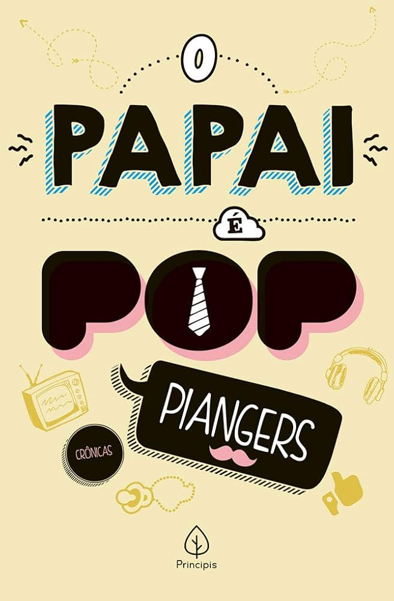
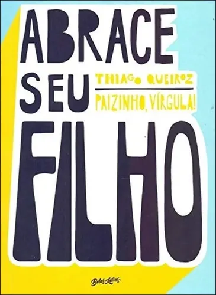
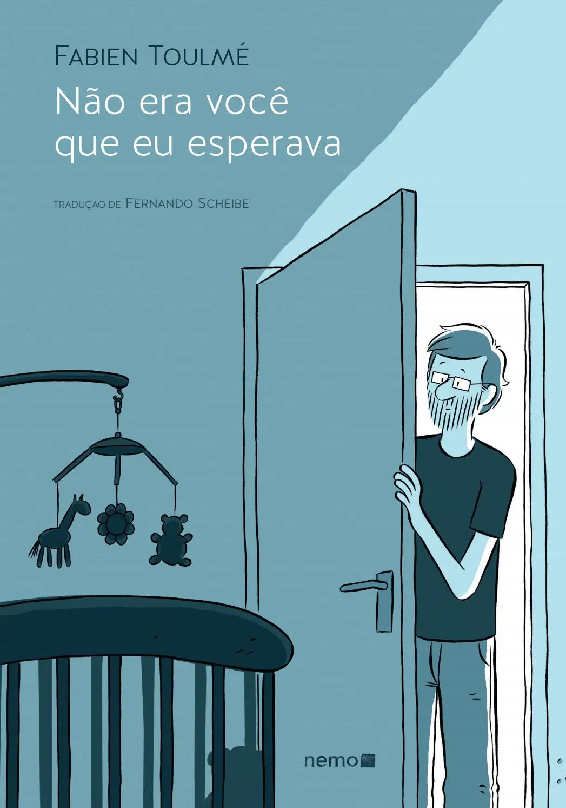
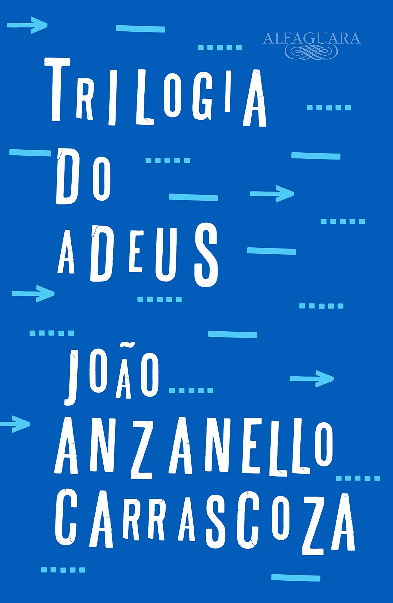
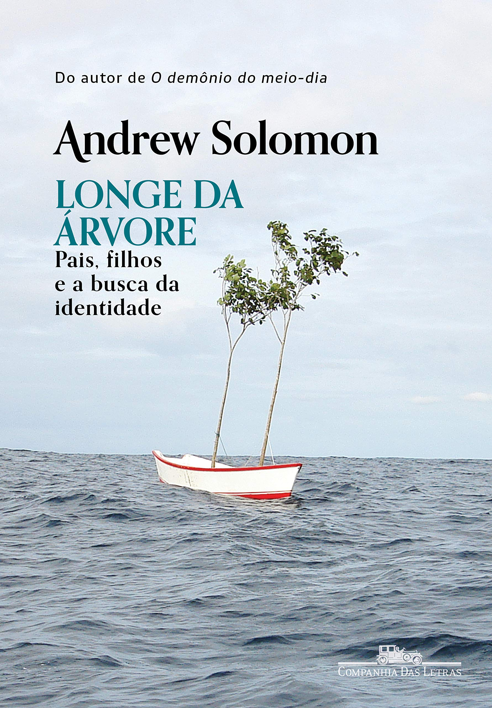

1. “Meu menino vadio”, Luiz Fernando Vianna (Intrínseca) 📗

O jornalista paulistano Luiz Fernando Vianna é pai de um garoto com autismo. Escrito em primeira pessoa, o livro é uma espécie de diário hiperrealista de um relacionamento pai e filho do ponto de vista do transtorno: como a relação dos dois nasce, cresce e se desenvolve a cada dia sob a luz – e, muitas vezes, sob a sombra também – da condição do filho. O leitor acompanha uma jornada real, permeada por tentativas e erros, inseguranças e medos. Não por acaso, Luiz Fernando escolheu como epígrafe do livro os versos de Paulinho da Viola: “as coisas estão no mundo, só que eu preciso aprender”.
2. “Bebegrafia”, Rodrigo Bueno e Victor Farat (Timo) 📘

“Bebegrafia” não é apenas um livro ilustrado sobre tornar-se um pai ou uma mãe. É uma maneira de eternizar esse momento, congelar no tempo algo muito delicado e fugaz. “O ‘Bebegrafia’ conta em primeira pessoa como foi nossa experiência com nossos bebês. Não somente “como demos conta do recado” mas também sobre o que ‘não demos conta’. Sem julgamentos. A lente do humor não permite isso. Não é mais um manual, um discurso absoluto, pelo contrário. É um convite aos novos pais e mães se inspirarem com o novo, o inédito, o inusitado”, explicam os autores.
3. “Papai é pop – um livro sobre todos os tipos de pai”, Marcos Piangers (Belas Letras) 📙

Blogueiro e porta-voz da paternidade ativa, Marcos Piangers, de Florianópolis, é autor de dois livros sobre o assunto, “Papai é pop” (versões 1, 2 e em quadrinhos) e “O poder do eu te amo”. No primeiro, ele defende a presença amorosa como o único elemento que não pode faltar na vida de uma criança. Já o segundo é uma celebração da potência do afeto. Fenômeno na internet, os vídeos de Piangers falam sobre família, parentalidade e principalmente sobre vínculos afetivos, chegando a 50 milhões de visualizações.
4. “Abrace seu filho”, Thiago Queiroz (Belas Letras) 📕

Pai de Dante e Gael, Thiago Queiroz é educador parental, autor do Paizinho Vírgula e cocriador do Tricô de Pais, primeiro podcast com foco em paternidade. Neste livro, ele conta como a paternidade e a aplicação do conceito da “disciplina positiva” no dia a dia construiu sua relação com os filhos, transformou sua própria masculinidade e o fez se reconectar com sua própria referência paterna. “Certo dia, num desses textos que eu escrevi relatando o que eu estava vivendo durante a gestação do Gael, sobre meus medos e pensamentos de como seria criar dois filhos, recebi um comentário que jamais imaginei receber. Era do meu pai. ‘Será que chegou a hora de nos reencontrarmos, filho?'”, escreve.
5. “Não era você que eu esperava”, Fabien Toulmé e Fernando Scheibe (Nemo-Autêntica) 📔

Autobiográfico e misto de sensibilidade com crueza, o livro conta, por meio de quadrinhos, o encontro inesperado de um pai com a condição genética da filha, que nasceu com síndrome de Down. A história acompanha os sentimentos que permeiam a vida de um pai recém-nascido diante do novo: da raiva à rejeição, culminando na construção do amor paterno. Um livro para lidar com o medo da imperfeição e – tanto para quem a vivencia quanto para quem defende a inclusão – aceitar a diferença como parte inevitável de ser humano.
6. “Trilogia do adeus”, João Anzanello Carrascoza (Companhia das Letras) 📚

Conhecido por seu trato poético com a linguagem em prosa, Carrascoza escreveu três livros em que aborda, direta ou indiretamente, o assunto paternidade. “Caderno de um ausente” (vencedor do prêmio Jabuti 2015), sua abordagem mais específica do tema, trata-se de um romance epistolar, uma longa carta, cheia de afetos e descobertas do mundo, para a filha Beatriz, que acaba de nascer, com medo da possibilidade de não estar por perto quando ela crescer. Na sequência, o segundo volume “Menina escrevendo com pai” traz Beatriz já adulta que responde a carta do pai, narrando a relacionamento entre pai e filha. “A pele da terra” fecha a trilogia, e é narrado por Mateus, irmão de Bia. “Um olhar tríplice sobre os vínculos entre pais e filhos, e sobre como pequenas ações do cotidiano nos marcam para sempre”, adianta a sinopse.
7. “Longe da árvore”, Andrew Solomon (Companhia das Letras) 📖

Neste livro sobre diversas experiências de parentalidades atípicas, o autor Andrew Solomon fala sobre as chamadas “identidades horizontais” (ou seja, divergentes dos padrões familiares e sociais predeterminados). O livro acompanha as histórias reais de famílias com filhos com síndrome de Down, autistas, prodígios, transexuais, esquizofrênicos, crianças com deficiências simples ou múltiplas, e crianças cuja concepção foi fruto de um estupro. Crianças, enfim, que vieram “diferentes” e desafiaram o afeto dos pais.